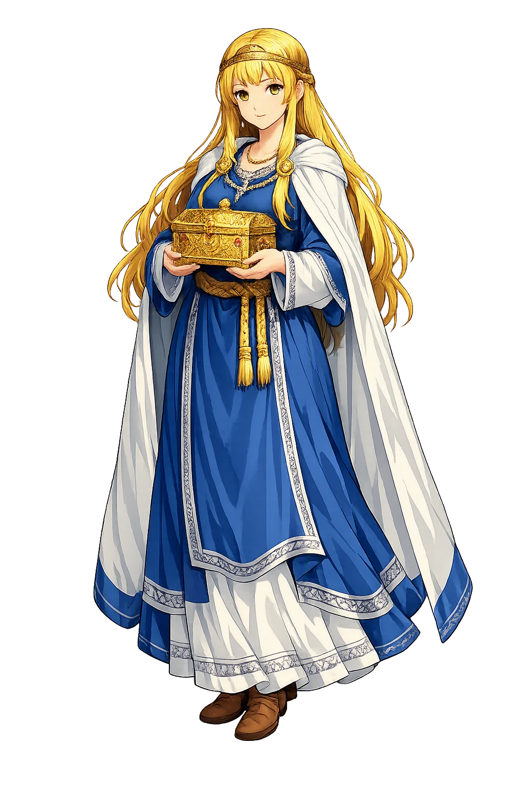

Fulla through the eyes of sculptors, painters, and craftsmen across the ages

Frigg and Fulla 1874 — Frigg and one of her handmaids, presumably Fulla. Photo/art: Ludwig Pietsch (1824-1911). Public domain via Wikimedia Commons.

Close wing basking position of Arhopala fulla (Hewitson, 1862) – Spotless Oakblue (Male). Photo/art: Sandipoutsider. CC BY-SA 4.0 via Wikimedia Commons.

Fulla canulia inBethBak1903 — Arhopala fulla canulia , ♂, in Bethune-Baker, 1903. Photo/art: George Thomas Bethune-Baker. Public domain via Wikimedia Commons.

Ruzomberok Ludovit Fulla — Bronzová busta Ľudovíta Fullu v Ružomberku Photo/art: František Gibala (sculptor) Peter Zelizňák (photo). Public domain via Wikimedia Commons.

Arhopala fulla 249136518 — Spotless Oakblue ( Arhopala fulla ) in India Photo/art: Harsha Jayaramaiah. CC BY 4.0 via Wikimedia Commons.

Rutes Històriques a Horta-Guinardó-casa fulla 01 — This image was provided to Wikimedia Commons by the Horta-Guinardó District Administration in Barcelona as part of an ongoing cooperative project with Amical Viquipèdia. Photo/art: Districte d'Horta Guinardó. CC BY-SA 3.0 via Wikimedia Commons.